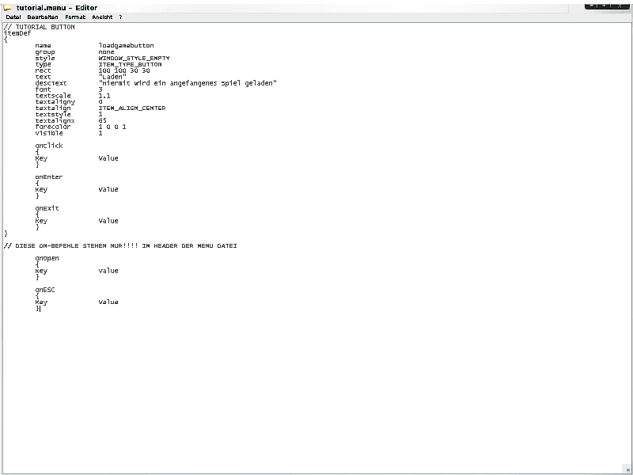
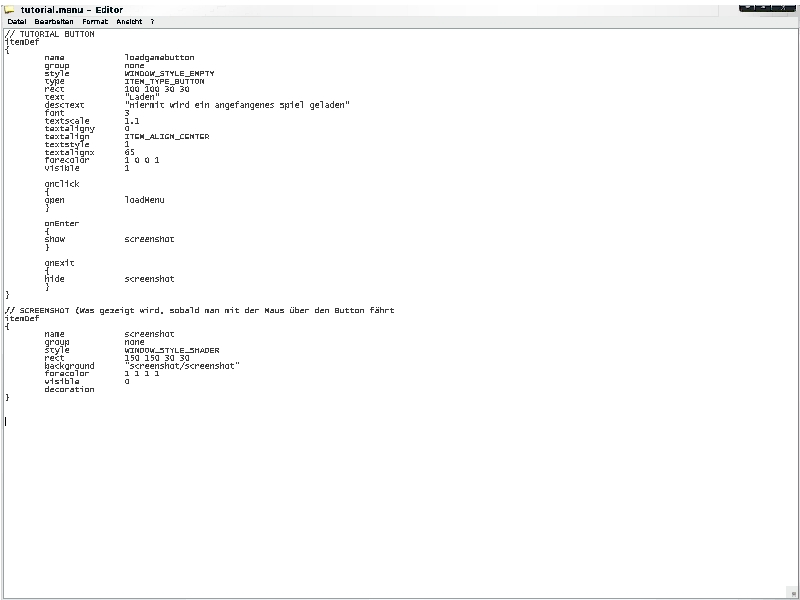

>> Mapping Academy - Tutorials <<
(c) 2004 www.darth-arth.de
Menü Coding - Die fortgeschrittenen Befehle
Author: Biki (Benjamin K.)
Kontakt: bennykaspar@web.de; 248703147
VORAUSSETZUNGEN:
>> Menü Coding - Die ersten Schritte (@Arth: Bitte hier ein Link zum 1. Tut machen)
<<
>> einen installierten Editor (wie Notepad oder Wordpad)
<<
>> WinRAR (download)<<
In dieser Lehreinheit (Tutorial) lernen wir ein paar fortgeschrittene Befehle und ihre Funktionen.
Am Ende dieses Tutorials solltet ihr dann in der Lage sein, ohne Probleme euer eigenes Menü zu erstellen!
Die wohl am häufigsten genutzten fortgeschrittenen Befehle sind die on-Befehle. Damit löst man etwas aus, sobald etwas passiert, ähnlich wie bei if. Wer schon Erfahrung mit HTML hat, wird sich sicher nicht allzu fremd vorkommen:

Hier sieht man einmal alle on-Befehle aufgelistet... und nun die Erklärung.. (Ja ich weiß... aber es geht nicht ohne :P ):
- onOpen - Sobald ein Menü geöffnet wird, werden alle Befehle innerhalb des onOpen Blocks ausgeführt!
- onESC - Sobald man die ESC Taste drückt (bzw. das Menü geschloßen wird) werden die Befehle im Block ausgeführt!
- onClick - Sobald der Button (in unserem Beispiel) gedrückt wird geschiet etwas! Das ist wohl in 99,9% der Fälle, dass sich ein neues Menü öffnet!
- onEnter - Löst ein Ereignis aus, sobald man mit der Maus über den Button fährt.
- onExit - Löst ein Ereignis aus, sobald man mit der Maus den Button verlässt!
Eigentlich sind die Befehle ja ganz logisch, man muss nur ein bisschen logisch denken ;)
Nun zeige ich euch mal ein komplexeres Beispiel dieser on-Befehle:

Ich bin sicher, das ihr das meiste schon versteht ;) Jedoch sind wieder ein paar neue Befehle hinzugekommen:
- open - Öffnet ein Menü... als value muss der Name angegeben werden, der im Header definiert ist (Nicht der Name der .menu Datei!!)
- show - Blendet etwas ein, was zwar in der .menu Datei definiert ist, jedoch bei "visible" die value "0" hat.
- hide - Blendet etwas aus, was entweder bei "visible" "1" stehen hat, oder was vorübergehend durch "show" eingeblendet wurde!
So, das war's erstmal hierzu.
Na, alles behalten? Hier nochmal eine kleine Auflistung vieler (nützlichen) Befehle:
Das war's wieder erstmal. Bei weiteren Fragen: Mail, Foren-PM oder per ICQ anschreiben!
MFG